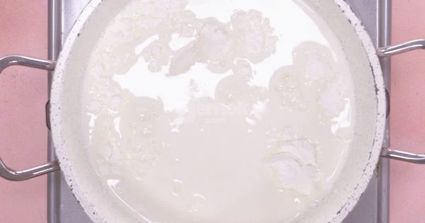
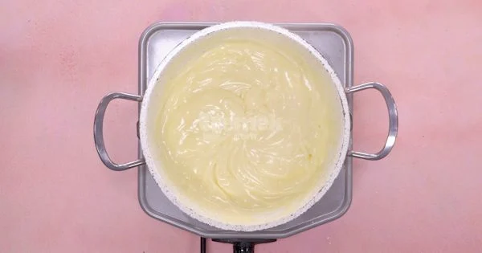
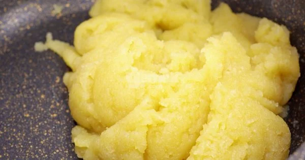
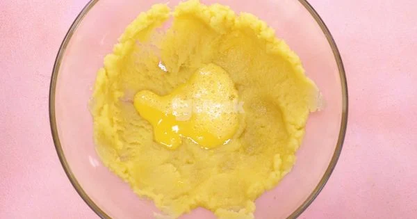
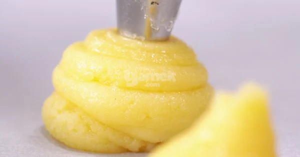
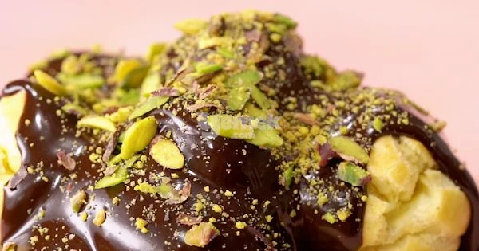

Kaç kişilik: 20 adet Hazırlama Süresi: 30 dakika Pişirme Süresi: 40 dakika
Profiterol Tarifi için Malzemeler
Profiterol Hamuru için:
- 1 su bardağı su (ılık)
- 1 su bardağı un
- 125 gram tereyağı
- 3 yemek kaşığı toz şeker
- 3 adet büyük boy yumurta
- 1/2 çay kaşığı tuz
Profiterol Kreması için:
- 500 ml süt
- 1.5 çay bardağı toz şeker
- 3 yemek kaşığı un
- 2 adet yumurta sarısı
- 1 paket vanilin (veya vanilya çubuğu)
- 1 tatlı kaşığı tereyağı
Çikolata Sosu için:
- 220 gram bitter çikolata
- 200 gram Krema
Profiterol Tarifinin Püf Noktası
Yumurtaların kesilmemesi için; hazırladığınız şu hamuru soğuduktan sonra yumurtaları tek tek ekleyin ve hızlıca karıştırın. Hazırladığınız profiterol hamurlarını tabanını yağlı kağıt ile kapladığınız fırın tepsisine kabarma payı bırakacak şekilde aralıklı olarak yerleştirin. Hamurların büyüklükleri piştikten sonra farklılık gösterebilir.
Profiterol Naıl Yapılır ?
- Kremasını hazırlamak için, bir sos tenceresine süt, toz şeker, un, yumurta sarısı ve vanilyayı ekleyip koyu bir kıvam alana kadar sürekli olarak karıştırın. 
- Koyulaşan kremaya tereyağı ilave edip karıştırın, ocaktan alın ve oda sıcaklığına geldikten sonra sıkma poşetine doldurup, en az 1 saat buzdolabında bekletin. 
- Profiterol hamurunu hazırlamak için, su, tereyağı, tuz ve toz şekeri bir tencerede kaynama noktasına getirin.
- Ardından unu da ekleyerek 3-4 dakika sürekli olarak karıştırın. Toparlanan hamuru ocaktan alıp bir kaseye alın ve oda sıcaklığında, ara ara hamuru karıştırarak 15 dakika soğutun. 
- Yumurtaları birer birer ekleyerek dinlenmiş ve soğumuş olan hamura yedirin. 
- Hamur, yumurtalarla tamamen karıştıktan sonra elastik ve yapışkan bir hamur elde edin ve sıkma poşetine alıp pişirme kağıdı serili fırın tepsisine ceviz büyüklüğünde parçalar sıkın. Hamurları düzeltmek için elinizi ıslatıp üzerlerini düzeltin.Önceden ısıtılmış 180 derece fırında 40 dakika pişirin. Pişen profiterol hamurlarını oda sıcaklığında dinlendirin. 
- Hamurların alt kısımlarından bıçak yardımıyla delik açın. İçini hazırladığınız kremayla doldurun.
- Çikolata sosu için; küçük parçalara ayırdığınız bitter çikolatayı benmari usulü eritin. Üzerine krema ilave edip güzelce karıştırın. Hazırladığınız çikolata sosunu profiterollerin üzerine dökün.
- Son olarak file Antep fıstığı gezdirip servis edin. Afiyet olsun! 